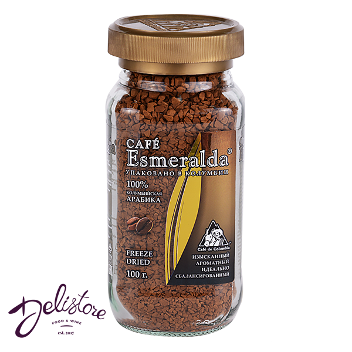

Колумбия Супремо (Colombia Supremo)

* Нажмите на изображение для просмотра в полном размере
Описание
Колумбия Супремо — это классика мирового кофе. Название "Supremo" означает самый крупный размер зерна (калибр 17/18), что является знаком высокого качества. Этот кофе отличается идеальным балансом, насыщенным телом и приятной сладостью. Благодаря своей универсальности, он отлично подходит как для эспрессо, так и для приготовления в турке или френч-прессе.
Характеристики:
- Страна: Колумбия
- Регион: Yuila (Уила)
- Разновидность: Катурра, Колумбия
- Обработка: Мытая (Washed)
- Уровень помола: Средний (универсальный)
- Вкусовой профиль: Карамель, шоколад, орехи, зелёное яблоко
- Обжарка: Средняя (медиум)
- Рекомендации по завариванию: Эспрессо, аэропресс, турка